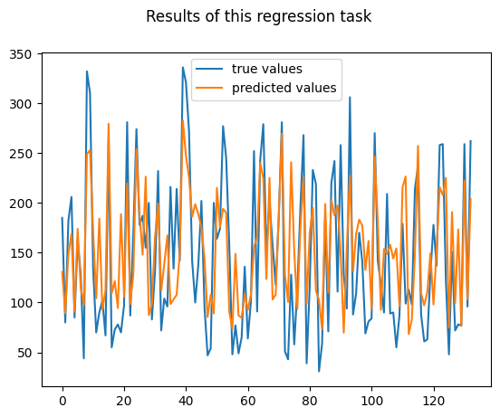
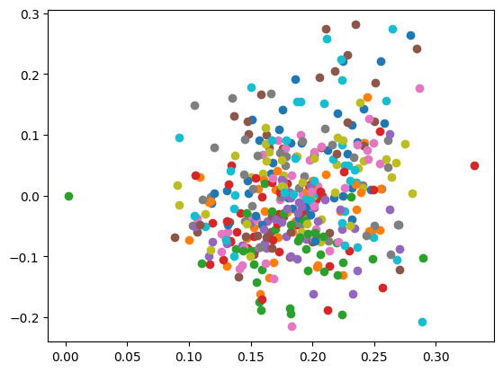

Scikit-Learn overview#
import numpy as np
import matplotlib.pyplot as plt
from sklearn.svm import SVC
import pandas as pd
from sklearn.datasets import load_iris
from sklearn.model_selection import train_test_split
import seaborn as sns
クラス分類 (Classification)#
与えられた膨大なデータを，あらかじめ人間が割り当てたカテゴリ（クラス）に割り当てるタスク．
ここではSVM（サポートベクターマシン）のデモを行います．
擬似乱数のSEEDを設定
SEED = 42
np.random.seed(SEED)
データの読み込み
df1 = load_iris(as_frame=True)["frame"]
print("---"*10,"raw data","---"*30)
display(df1.head(10))
print("---"*10,"info","---"*30)
print(df1.info())
print("---"*10,"describe","---"*30)
print(df1.describe())
------------------------------ raw data ------------------------------------------------------------------------------------------
| sepal length (cm) | sepal width (cm) | petal length (cm) | petal width (cm) | target | |
|---|---|---|---|---|---|
| 0 | 5.1 | 3.5 | 1.4 | 0.2 | 0 |
| 1 | 4.9 | 3.0 | 1.4 | 0.2 | 0 |
| 2 | 4.7 | 3.2 | 1.3 | 0.2 | 0 |
| 3 | 4.6 | 3.1 | 1.5 | 0.2 | 0 |
| 4 | 5.0 | 3.6 | 1.4 | 0.2 | 0 |
| 5 | 5.4 | 3.9 | 1.7 | 0.4 | 0 |
| 6 | 4.6 | 3.4 | 1.4 | 0.3 | 0 |
| 7 | 5.0 | 3.4 | 1.5 | 0.2 | 0 |
| 8 | 4.4 | 2.9 | 1.4 | 0.2 | 0 |
| 9 | 4.9 | 3.1 | 1.5 | 0.1 | 0 |
------------------------------ info ------------------------------------------------------------------------------------------
<class 'pandas.core.frame.DataFrame'>
RangeIndex: 150 entries, 0 to 149
Data columns (total 5 columns):
# Column Non-Null Count Dtype
--- ------ -------------- -----
0 sepal length (cm) 150 non-null float64
1 sepal width (cm) 150 non-null float64
2 petal length (cm) 150 non-null float64
3 petal width (cm) 150 non-null float64
4 target 150 non-null int64
dtypes: float64(4), int64(1)
memory usage: 6.0 KB
None
------------------------------ describe ------------------------------------------------------------------------------------------
sepal length (cm) sepal width (cm) petal length (cm) \
count 150.000000 150.000000 150.000000
mean 5.843333 3.057333 3.758000
std 0.828066 0.435866 1.765298
min 4.300000 2.000000 1.000000
25% 5.100000 2.800000 1.600000
50% 5.800000 3.000000 4.350000
75% 6.400000 3.300000 5.100000
max 7.900000 4.400000 6.900000
petal width (cm) target
count 150.000000 150.000000
mean 1.199333 1.000000
std 0.762238 0.819232
min 0.100000 0.000000
25% 0.300000 0.000000
50% 1.300000 1.000000
75% 1.800000 2.000000
max 2.500000 2.000000
データを訓練用とテスト用に分ける
X_train, X_test, y_train, y_test = train_test_split(
df1.iloc[:,:4], df1["target"],
stratify=df1["target"],
test_size=0.3,
shuffle=True,
)
サポートベクターマシンの初期化と訓練
classifier = SVC()
classifier.fit(X_train,y_train)
SVC()In a Jupyter environment, please rerun this cell to show the HTML representation or trust the notebook.
On GitHub, the HTML representation is unable to render, please try loading this page with nbviewer.org.
SVC()
テストデータに対する予測結果の表示
predicted_class_label = classifier.predict(X_test)
predicted_class_label
array([2, 1, 2, 1, 2, 2, 1, 1, 0, 2, 0, 0, 2, 2, 0, 2, 1, 0, 0, 0, 1, 0,
1, 2, 2, 1, 1, 1, 1, 0, 2, 2, 1, 0, 2, 0, 0, 0, 0, 2, 1, 0, 1, 2,
1])
結果の可視化
results1 = X_test.copy()
results1["predicted_class_label"] = predicted_class_label
sns.pairplot(results1, hue="predicted_class_label")
<seaborn.axisgrid.PairGrid at 0x16ff28b90>
results1["true_class_label"] = y_test
results1.head(10)
| sepal length (cm) | sepal width (cm) | petal length (cm) | petal width (cm) | predicted_class_label | true_class_label | |
|---|---|---|---|---|---|---|
| 107 | 7.3 | 2.9 | 6.3 | 1.8 | 2 | 2 |
| 63 | 6.1 | 2.9 | 4.7 | 1.4 | 1 | 1 |
| 133 | 6.3 | 2.8 | 5.1 | 1.5 | 2 | 2 |
| 56 | 6.3 | 3.3 | 4.7 | 1.6 | 1 | 1 |
| 127 | 6.1 | 3.0 | 4.9 | 1.8 | 2 | 2 |
| 140 | 6.7 | 3.1 | 5.6 | 2.4 | 2 | 2 |
| 53 | 5.5 | 2.3 | 4.0 | 1.3 | 1 | 1 |
| 69 | 5.6 | 2.5 | 3.9 | 1.1 | 1 | 1 |
| 20 | 5.4 | 3.4 | 1.7 | 0.2 | 0 | 0 |
| 141 | 6.9 | 3.1 | 5.1 | 2.3 | 2 | 2 |
classifier.score(X_test,y_test)
0.9555555555555556
回帰 (Regression)#
与えられた膨大なデータから，それらに対応する数値を予測するタスク．
ここではランダムフォレストを使ったデモを行います．
from sklearn.ensemble import RandomForestRegressor
from sklearn.datasets import load_diabetes
df2 = load_diabetes(as_frame=True)["frame"]
print("---"*10,"raw data","---"*30)
display(df2.head(10))
print("---"*10,"info","---"*30)
print(df2.info())
print("---"*10,"describe","---"*30)
print(df2.describe())
------------------------------ raw data ------------------------------------------------------------------------------------------
| age | sex | bmi | bp | s1 | s2 | s3 | s4 | s5 | s6 | target | |
|---|---|---|---|---|---|---|---|---|---|---|---|
| 0 | 0.038076 | 0.050680 | 0.061696 | 0.021872 | -0.044223 | -0.034821 | -0.043401 | -0.002592 | 0.019907 | -0.017646 | 151.0 |
| 1 | -0.001882 | -0.044642 | -0.051474 | -0.026328 | -0.008449 | -0.019163 | 0.074412 | -0.039493 | -0.068332 | -0.092204 | 75.0 |
| 2 | 0.085299 | 0.050680 | 0.044451 | -0.005670 | -0.045599 | -0.034194 | -0.032356 | -0.002592 | 0.002861 | -0.025930 | 141.0 |
| 3 | -0.089063 | -0.044642 | -0.011595 | -0.036656 | 0.012191 | 0.024991 | -0.036038 | 0.034309 | 0.022688 | -0.009362 | 206.0 |
| 4 | 0.005383 | -0.044642 | -0.036385 | 0.021872 | 0.003935 | 0.015596 | 0.008142 | -0.002592 | -0.031988 | -0.046641 | 135.0 |
| 5 | -0.092695 | -0.044642 | -0.040696 | -0.019442 | -0.068991 | -0.079288 | 0.041277 | -0.076395 | -0.041176 | -0.096346 | 97.0 |
| 6 | -0.045472 | 0.050680 | -0.047163 | -0.015999 | -0.040096 | -0.024800 | 0.000779 | -0.039493 | -0.062917 | -0.038357 | 138.0 |
| 7 | 0.063504 | 0.050680 | -0.001895 | 0.066629 | 0.090620 | 0.108914 | 0.022869 | 0.017703 | -0.035816 | 0.003064 | 63.0 |
| 8 | 0.041708 | 0.050680 | 0.061696 | -0.040099 | -0.013953 | 0.006202 | -0.028674 | -0.002592 | -0.014960 | 0.011349 | 110.0 |
| 9 | -0.070900 | -0.044642 | 0.039062 | -0.033213 | -0.012577 | -0.034508 | -0.024993 | -0.002592 | 0.067737 | -0.013504 | 310.0 |
------------------------------ info ------------------------------------------------------------------------------------------
<class 'pandas.core.frame.DataFrame'>
RangeIndex: 442 entries, 0 to 441
Data columns (total 11 columns):
# Column Non-Null Count Dtype
--- ------ -------------- -----
0 age 442 non-null float64
1 sex 442 non-null float64
2 bmi 442 non-null float64
3 bp 442 non-null float64
4 s1 442 non-null float64
5 s2 442 non-null float64
6 s3 442 non-null float64
7 s4 442 non-null float64
8 s5 442 non-null float64
9 s6 442 non-null float64
10 target 442 non-null float64
dtypes: float64(11)
memory usage: 38.1 KB
None
------------------------------ describe ------------------------------------------------------------------------------------------
age sex bmi bp s1 \
count 4.420000e+02 4.420000e+02 4.420000e+02 4.420000e+02 4.420000e+02
mean -2.511817e-19 1.230790e-17 -2.245564e-16 -4.797570e-17 -1.381499e-17
std 4.761905e-02 4.761905e-02 4.761905e-02 4.761905e-02 4.761905e-02
min -1.072256e-01 -4.464164e-02 -9.027530e-02 -1.123988e-01 -1.267807e-01
25% -3.729927e-02 -4.464164e-02 -3.422907e-02 -3.665608e-02 -3.424784e-02
50% 5.383060e-03 -4.464164e-02 -7.283766e-03 -5.670422e-03 -4.320866e-03
75% 3.807591e-02 5.068012e-02 3.124802e-02 3.564379e-02 2.835801e-02
max 1.107267e-01 5.068012e-02 1.705552e-01 1.320436e-01 1.539137e-01
s2 s3 s4 s5 s6 \
count 4.420000e+02 4.420000e+02 4.420000e+02 4.420000e+02 4.420000e+02
mean 3.918434e-17 -5.777179e-18 -9.042540e-18 9.293722e-17 1.130318e-17
std 4.761905e-02 4.761905e-02 4.761905e-02 4.761905e-02 4.761905e-02
min -1.156131e-01 -1.023071e-01 -7.639450e-02 -1.260971e-01 -1.377672e-01
25% -3.035840e-02 -3.511716e-02 -3.949338e-02 -3.324559e-02 -3.317903e-02
50% -3.819065e-03 -6.584468e-03 -2.592262e-03 -1.947171e-03 -1.077698e-03
75% 2.984439e-02 2.931150e-02 3.430886e-02 3.243232e-02 2.791705e-02
max 1.987880e-01 1.811791e-01 1.852344e-01 1.335973e-01 1.356118e-01
target
count 442.000000
mean 152.133484
std 77.093005
min 25.000000
25% 87.000000
50% 140.500000
75% 211.500000
max 346.000000
X_train2,X_test2,y_train2,y_test2 = train_test_split(
df2.iloc[:,:-1], df2["target"],
test_size=0.3,
shuffle=True,
)
regressor = RandomForestRegressor()
regressor.fit(X_train2,y_train2)
RandomForestRegressor()In a Jupyter environment, please rerun this cell to show the HTML representation or trust the notebook.
On GitHub, the HTML representation is unable to render, please try loading this page with nbviewer.org.
RandomForestRegressor()
予測結果
predicted_value = regressor.predict(X_test2)
predicted_value
array([130.75, 89.33, 148.52, 168.82, 90.81, 173.92, 115.08, 97.47,
249.04, 253.01, 171.58, 104.28, 184.22, 93.06, 112.24, 279.37,
109.33, 121.46, 94.48, 188.71, 106.02, 219.32, 98.57, 128.64,
253.92, 188.17, 148.01, 226.34, 87.36, 98.86, 165.6 , 199.5 ,
111.83, 138.82, 167.41, 98.5 , 103.2 , 107.83, 149.75, 283. ,
247.3 , 225.36, 186.03, 198.68, 188.52, 175.25, 144.57, 85.44,
107.83, 89.09, 215.06, 175.73, 194.03, 190.17, 90.92, 73.63,
148.88, 86.92, 84.84, 108.3 , 92.55, 108.25, 156.03, 165.02,
240.1 , 224.75, 123.68, 225.14, 103.08, 107.86, 189.89, 269.44,
127.77, 100.59, 240.83, 151.35, 93.61, 175.42, 225.9 , 98.64,
169.71, 195.16, 112.2 , 102.33, 73.17, 198.85, 109.89, 202.56,
187.47, 197.38, 150.23, 69.78, 155.9 , 227.56, 131.47, 168.91,
183.24, 177.13, 132.77, 161.82, 93.27, 246.47, 182.01, 92.69,
153.69, 148.82, 157.84, 144.17, 154.28, 96.33, 215.61, 226.44,
68.31, 82.83, 149.05, 257.22, 109.39, 97.14, 110.33, 149.31,
98.12, 151.62, 215.8 , 207.76, 225.17, 74.94, 190.76, 99.67,
173.43, 76.58, 222.36, 103.33, 204.19])
結果の可視化
fig = plt.figure()
fig.suptitle("Results of this regression task")
ax = fig.add_subplot(111)
ax.plot(np.arange(len(y_test2)),y_test2,label="true values")
ax.plot(np.arange(len(y_test2)),predicted_value, label="predicted values")
ax.legend()
plt.show()

results2 = X_test2.copy()
results2["predicted_value"] = predicted_value
results2["true_value"] = y_test2
results2.head(10)
| age | sex | bmi | bp | s1 | s2 | s3 | s4 | s5 | s6 | predicted_value | true_value | |
|---|---|---|---|---|---|---|---|---|---|---|---|---|
| 183 | 0.045341 | 0.050680 | -0.035307 | 0.063187 | -0.004321 | -0.001627 | -0.010266 | -0.002592 | 0.015568 | 0.056912 | 130.75 | 185.0 |
| 288 | 0.070769 | 0.050680 | -0.016984 | 0.021872 | 0.043837 | 0.056305 | 0.037595 | -0.002592 | -0.070209 | -0.017646 | 89.33 | 80.0 |
| 54 | -0.049105 | -0.044642 | 0.025051 | 0.008101 | 0.020446 | 0.017788 | 0.052322 | -0.039493 | -0.041176 | 0.007207 | 148.52 | 182.0 |
| 365 | 0.034443 | -0.044642 | -0.038540 | -0.012556 | 0.009439 | 0.005262 | -0.006584 | -0.002592 | 0.031193 | 0.098333 | 168.82 | 206.0 |
| 136 | -0.092695 | -0.044642 | -0.081653 | -0.057313 | -0.060735 | -0.068014 | 0.048640 | -0.076395 | -0.066490 | -0.021788 | 90.81 | 85.0 |
| 65 | -0.045472 | 0.050680 | -0.024529 | 0.059744 | 0.005311 | 0.014970 | -0.054446 | 0.071210 | 0.042341 | 0.015491 | 173.92 | 163.0 |
| 63 | -0.034575 | -0.044642 | -0.037463 | -0.060756 | 0.020446 | 0.043466 | -0.013948 | -0.002592 | -0.030748 | -0.071494 | 115.08 | 128.0 |
| 306 | 0.009016 | 0.050680 | -0.001895 | 0.021872 | -0.038720 | -0.024800 | -0.006584 | -0.039493 | -0.039809 | -0.013504 | 97.47 | 44.0 |
| 290 | 0.059871 | 0.050680 | 0.076786 | 0.025315 | 0.001183 | 0.016849 | -0.054446 | 0.034309 | 0.029935 | 0.044485 | 249.04 | 332.0 |
| 254 | 0.030811 | 0.050680 | 0.056307 | 0.076958 | 0.049341 | -0.012274 | -0.036038 | 0.071210 | 0.120051 | 0.090049 | 253.01 | 310.0 |
regressor.score(X_test2,y_test2)
0.47975011322424
クラスタリング (Clustering)#
与えられた膨大なデータをいくつかのグループに分けるタスク．ここで見つかったグループをクラスターと呼ぶ．
ここではkmeansを使ってデモを行います．
from sklearn.cluster import KMeans
clustering = KMeans(n_clusters=2, n_init="auto")
clustering.fit(X_train)
KMeans(n_clusters=2)In a Jupyter environment, please rerun this cell to show the HTML representation or trust the notebook.
On GitHub, the HTML representation is unable to render, please try loading this page with nbviewer.org.
KMeans(n_clusters=2)
clustering.transform(X_train)[:10]
array([[1.92048332, 2.42265007],
[3.64172282, 0.8523378 ],
[0.41690734, 4.03925862],
[5.15481766, 1.25135927],
[2.92431009, 1.1437106 ],
[4.55075458, 0.75495562],
[0.35501261, 4.07961902],
[0.42548085, 3.9903091 ],
[0.78770451, 4.32085791],
[5.2050649 , 1.28253091]])
clustering.predict(X_train)
array([0, 1, 0, 1, 1, 1, 0, 0, 0, 1, 1, 0, 0, 1, 1, 1, 0, 0, 1, 1, 0, 1,
1, 1, 1, 0, 0, 0, 1, 1, 0, 0, 1, 1, 0, 0, 1, 1, 1, 0, 1, 0, 1, 0,
1, 1, 0, 1, 1, 1, 1, 0, 1, 1, 1, 1, 0, 1, 0, 1, 1, 1, 1, 1, 1, 1,
1, 0, 1, 1, 1, 1, 0, 1, 1, 1, 0, 1, 1, 0, 0, 1, 1, 1, 0, 1, 1, 1,
1, 0, 1, 1, 1, 1, 1, 0, 1, 1, 1, 0, 0, 1, 0, 1, 0], dtype=int32)
clustering.predict(X_test)
array([1, 1, 1, 1, 1, 1, 1, 1, 0, 1, 0, 0, 1, 1, 0, 1, 0, 0, 0, 0, 1, 0,
1, 1, 1, 1, 1, 0, 1, 0, 1, 1, 1, 0, 1, 0, 0, 0, 0, 1, 1, 0, 1, 1,
1], dtype=int32)
results1.keys()
Index(['sepal length (cm)', 'sepal width (cm)', 'petal length (cm)',
'petal width (cm)', 'predicted_class_label', 'true_class_label'],
dtype='object')
results1["cluster"] = clustering.predict(X_test)
sns.pairplot(
results1[['sepal length (cm)', 'sepal width (cm)', 'petal length (cm)','petal width (cm)', "cluster"]],
hue="cluster",
)
<seaborn.axisgrid.PairGrid at 0x3720589d0>
results1.head(10)[['sepal length (cm)', 'sepal width (cm)', 'petal length (cm)',
'petal width (cm)', 'true_class_label',
'cluster']]
| sepal length (cm) | sepal width (cm) | petal length (cm) | petal width (cm) | true_class_label | cluster | |
|---|---|---|---|---|---|---|
| 107 | 7.3 | 2.9 | 6.3 | 1.8 | 2 | 1 |
| 63 | 6.1 | 2.9 | 4.7 | 1.4 | 1 | 1 |
| 133 | 6.3 | 2.8 | 5.1 | 1.5 | 2 | 1 |
| 56 | 6.3 | 3.3 | 4.7 | 1.6 | 1 | 1 |
| 127 | 6.1 | 3.0 | 4.9 | 1.8 | 2 | 1 |
| 140 | 6.7 | 3.1 | 5.6 | 2.4 | 2 | 1 |
| 53 | 5.5 | 2.3 | 4.0 | 1.3 | 1 | 1 |
| 69 | 5.6 | 2.5 | 3.9 | 1.1 | 1 | 1 |
| 20 | 5.4 | 3.4 | 1.7 | 0.2 | 0 | 0 |
| 141 | 6.9 | 3.1 | 5.1 | 2.3 | 2 | 1 |
次元削減#
多次元データの情報をできるだけ欠損させずに，より低次元で表現するタスク．
ここではLSI（Latent Semantic Indexing）でデモを行います．
from sklearn.decomposition import TruncatedSVD as LSI
from sklearn.datasets import fetch_20newsgroups
from sklearn.feature_extraction.text import TfidfVectorizer
news = fetch_20newsgroups()
vectorizer = TfidfVectorizer(max_features=2000, stop_words="english")
vectorizer.fit(news.data)
TfidfVectorizer(max_features=2000, stop_words='english')In a Jupyter environment, please rerun this cell to show the HTML representation or trust the notebook.
On GitHub, the HTML representation is unable to render, please try loading this page with nbviewer.org.
TfidfVectorizer(max_features=2000, stop_words='english')
X = vectorizer.transform(news.data)
decomposer = LSI(n_components=2,)
decomposer.fit(X)
TruncatedSVD()In a Jupyter environment, please rerun this cell to show the HTML representation or trust the notebook.
On GitHub, the HTML representation is unable to render, please try loading this page with nbviewer.org.
TruncatedSVD()
embed = decomposer.transform(X)
news_df = pd.DataFrame(embed)
news_df["class"] = news.target
news_df.head()
| 0 | 1 | class | |
|---|---|---|---|
| 0 | 0.187086 | -0.045149 | 7 |
| 1 | 0.130343 | -0.079269 | 4 |
| 2 | 0.262456 | -0.022060 | 4 |
| 3 | 0.254814 | -0.056732 | 1 |
| 4 | 0.210019 | -0.006634 | 14 |
for i in range(0,20):
x = embed[:,0][news.target==i]
y = embed[:,1][news.target==i]
plt.scatter(x[:20], y[:20])
